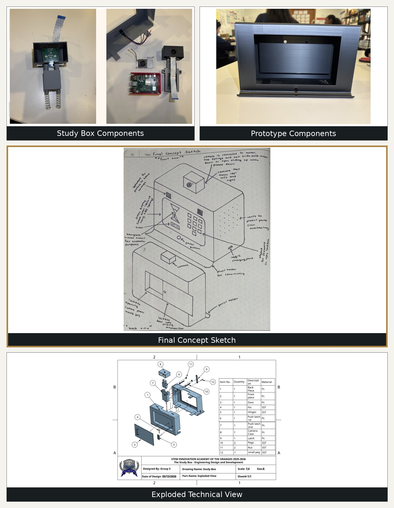

Design & Creativity
Mechanical design, concept sketches, technical drawing, and CAD or 3D modeling.
Interested in mechanical design and engineering, with a hands-on approach to learning, solving problems, and developing ideas.
I am currently pursuing a bachelor's degree in Mechanical Engineering Technology and continuing to develop my skills in design and engineering. I enjoy learning new things, working through challenges, and putting effort into completing tasks carefully.
My high school engineering classes introduced me to design projects, research, technical drawings, and prototyping. Outside of school, I work at QuickChek, draw in my free time, and work out when I can.
Mechanical design, concept sketches, technical drawing, and CAD or 3D modeling.
Prototyping, material selection, and understanding how parts fit together.
Programming, mathematics, physics, research, and problem-solving.
Communication, collaboration, accepting feedback, and adapting ideas.
These are areas I have explored or am continuing to develop, rather than a claim of professional-level proficiency.
I have more experience using Onshape, with some experience in Fusion 360 and continued learning in CAD.
The Study Box was a year-long senior capstone project created with Cristal Escalante and Samuel Ramnauth. Our team explored how phone distractions and difficulty managing study time can affect students. We developed a concept for a lockable phone box designed to encourage more focused study sessions and healthier study habits.
Phones and other distractions can make it difficult to begin studying, manage time, and stay focused on schoolwork. Our project explored ways to support time management, sustained attention, and self-control.
A lockable phone compartment paired with a visual timer. The proposed Pomodoro-style routine uses 25 minutes of studying followed by a 5-minute break.
We researched study habits and compared existing desk lamps and study products. Our comparison focused on combining a visual timer, lockable phone storage, and monitoring features in one concept.
Our team developed concept sketches and technical drawings for the enclosure, door, camera housing, and latch system. We used design comparisons and feedback to refine the concept.
Our research considered polycarbonate for the enclosure and stainless steel for selected hardware. The proposed electronic system included a Raspberry Pi 5, screen, buttons, lights, camera, and electronic latch.
The proposed app included customizable study sessions, progress information, and an unlock-code concept. These features were part of the design plan and are not a claim that every feature was fully implemented.
My contribution: I contributed concept art and helped create a physical prototype as part of the team. The research, feature planning, and proposed electronic system were developed collaboratively.
Project focus: The Study Box combined research, design, technical drawing, material considerations, and prototyping to explore a practical response to study-time distractions.
Our capstone followed an engineering design process, moving from researching a problem to developing a concept, planning its components, and considering how the design could be improved.
We focused on phone distractions, procrastination, and difficulties managing study time. Our goal was to explore how a product could help students develop more consistent study habits.
We researched executive-function skills, including task initiation, time management, sustained attention, and self-control. Our presentation reported surveys involving 107 students and 117 adults to gather student and adult perspectives.
We examined similar study products and compared their features with our concept. This helped us explore the value of combining a visual timer, a lockable phone compartment, and monitoring features.
Team members created sketches, which we compared using a design matrix. We combined ideas and refined the concept. I contributed concept art during this stage.
We developed technical drawings and an exploded view to communicate how the enclosure, door, camera housing, and latch components could fit together. These drawings helped explain the design beyond the initial sketch.
Our material research considered polycarbonate for the enclosure and stainless steel for selected hardware, such as springs and hinges. We considered durability, heat resistance, cost, and repeated use when comparing options.
The proposed system included a Raspberry Pi 5, a screen, status lights, buttons, a camera, and an electronic latch. The concept also explored a companion app and study-session controls.
We worked on a physical prototype and considered component placement, dimensions, openings, fit, and how different parts could work together. This helped connect our drawings with the practical challenges of building a product.
Our project planning identified areas that would need evaluation, including heat management, camera coverage, latch reliability, and durability. These are testing considerations and should not be read as proof that every test was completed.
We presented our findings and considered feedback. One design idea was to explore a fisheye camera lens instead of a rectilinear lens to capture a wider field of view. This process showed me why engineers need to communicate, review, and adapt ideas.
What I learned: Engineering involves more than coming up with an idea. It also requires research, careful design decisions, collaboration, and learning from feedback.
A visual overview of the Study Box capstone project, from the original concept to the technical design and app concepts.

A collection of concept artwork and engineering visuals showing how our team developed the Study Box idea.
Highlighted in the combined image. The annotated concept sketch shows the proposed overall appearance of the Study Box and design features such as the phone compartment, timer, camera, and ventilation. This sketch helped communicate our team's design idea.
The technical drawings created with Onshape show individual parts of the design, including the case, door, camera housing, and latch system. These drawings help explain the shape and arrangement of the components.
The exploded view separates the assembly into individual components to show how the parts are arranged and how they could fit together in the proposed product.
The app visuals illustrate the planned digital features, including study-session timing, progress information, camera-monitoring concepts, and an unlock-code system. These images represent the proposed app design.
Together, these visuals document the progression from concept art to more detailed engineering drawings and supporting digital concepts during our capstone project.
I took engineering classes throughout high school, from freshman through senior year, alongside AP coursework. I am now pursuing a bachelor's degree in Mechanical Engineering Technology.
The Study Box showed me how research, concept art, technical drawings, material choices, teamwork, and feedback contribute to the engineering design process. It also helped me explore how an initial idea can develop into a physical prototype.